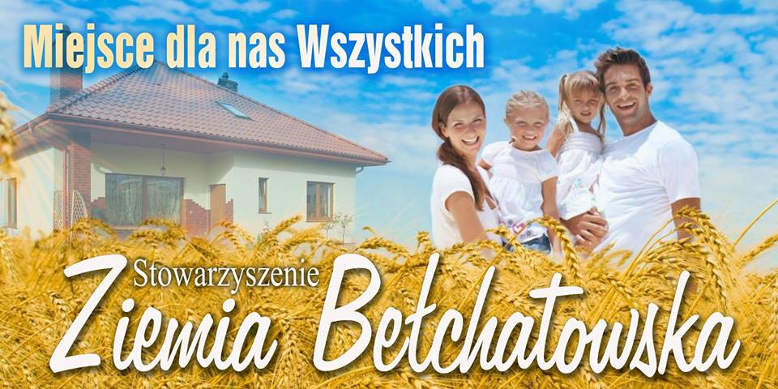

- Dnia pewnego Pchła od rana Była bardzo niewyspana, Więc wezwała pełna skruchy Dwa uczone karaluchy: "Jestem chora. To się zdarza. Zaraz jadę do lekarza. Każcie zaprząc moje kuce, Po południu pewno wrócę." Jedzie sobie Pchła Szachrajka Kolorowa jak mozaika, Jedzie pełna animuszu W żakieciku z lila pluszu, Z żółtym piórkiem w kapeluszu, W modrych butach atłasowych, W rękawiczkach purpurowych. Przyjechała do doktora, Mówi z płaczem: "Jestem chora, Ostre bóle mam w żołądku, Płuca trochę nie w porządku, Opuchniętą mam śledzionę I migdały powiększone." Doktor badał ją dokładnie: "O, niedobrze! O, nieładnie!" Opukiwał ją z godzinę, Kazał łykać aspirynę, Coś pod nosem mruczał szeptem I wypisał jej receptę Bardzo długą, metr bez mała, Że aż z bryczki wystawała. Koła toczą się z turkotem, Jedzie nasza Pchła z powrotem, Jedzie wolno, bez pośpiechu, I zanosi się od śmiechu: "Ależ wzięłam go na kawał, Badał, lekarstw ponadawał, A ja inną mam chorobę: Jestem chora na wątrobę, Reszta zaś - to zwykła bajka, Taka ze mnie Pchła Szachrajka!" III
- Informujemy, iż w dniu 13.05.2022 r o godz. 17:00, odbędzie się sprawozdawcze Walne Zebranie Członków Stowarzyszenia Ziemia Bełchatowska. Proponowany porządek zebrania: 1. Powitanie zebranych i otwarcie obrad. 2. Wybór przewodniczącego i protokolanta WZC 3. Stwierdzenie prawomocności obrad na podstawie listy obecności. 4. Przedstawienie i przyjęcie porządku obrad: 1) przyjęcie protokołu z poprzedniego WZC, 2) przedstawienie prze sekretarza sprawozdania z działalności Zarządu Stowarzyszenia i głosowanie nad jego przyjęciem, 3) przedstawienie przez skarbnika sprawozdania finansowego za rok 2021 i jego zatwierdzenie, 4) sprawozdanie Komisji Rewizyjnej i ocena pracy Zarządu przez Komisję, 5) informacja z działalności Sądu Koleżeńskiego 6) wystąpienie prezesa Stowarzyszenia ZB. , 7) wnioski i sprawy różne, 😎 zamknięcie obrad. Miejsce spotkania zostało podane w wiadomości SMS. W razie pytań proszę o kontakt telefoniczny 501357739.
